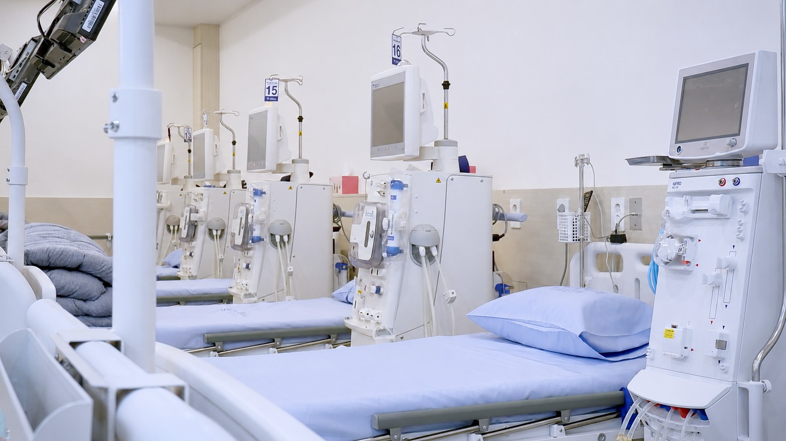
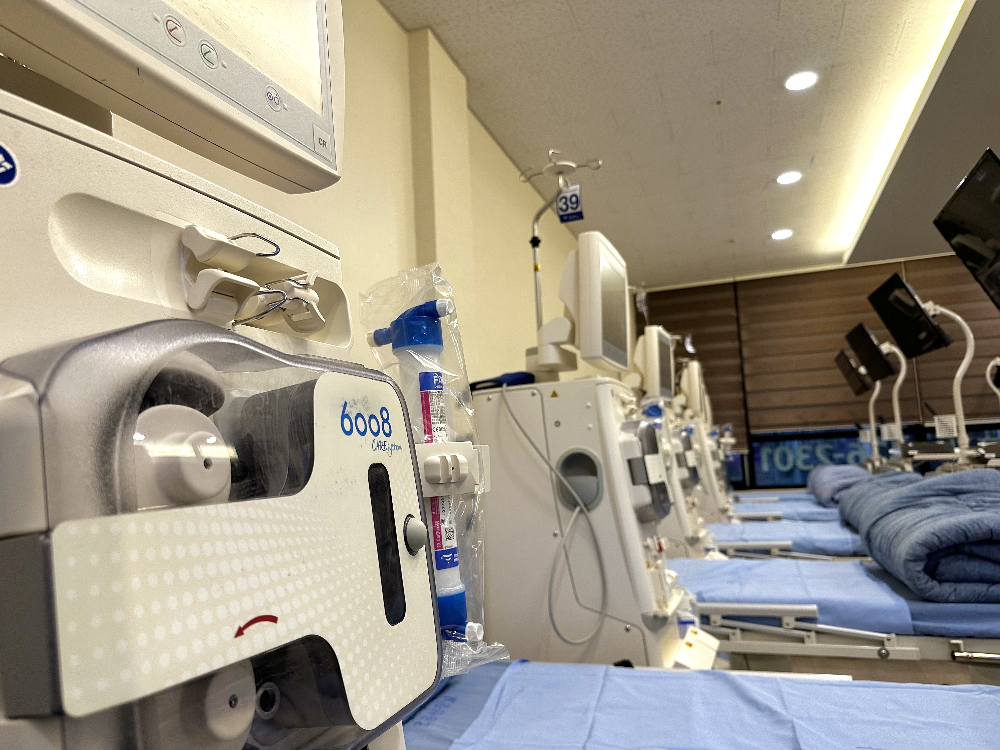
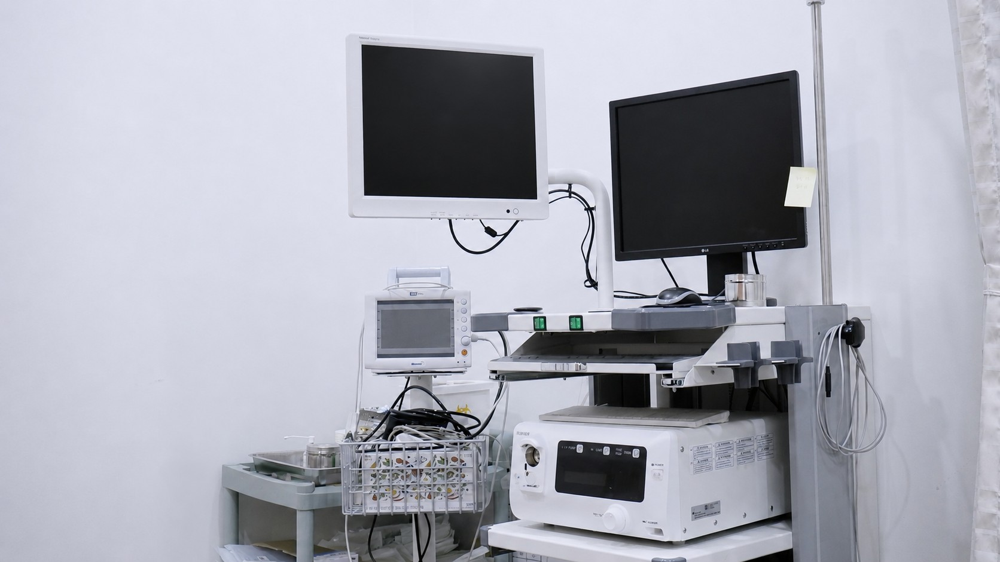
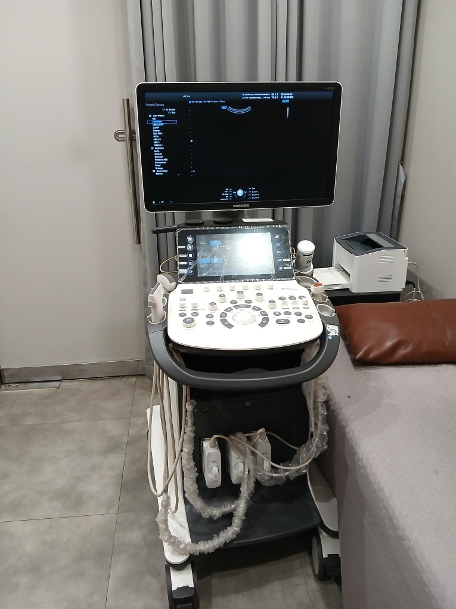
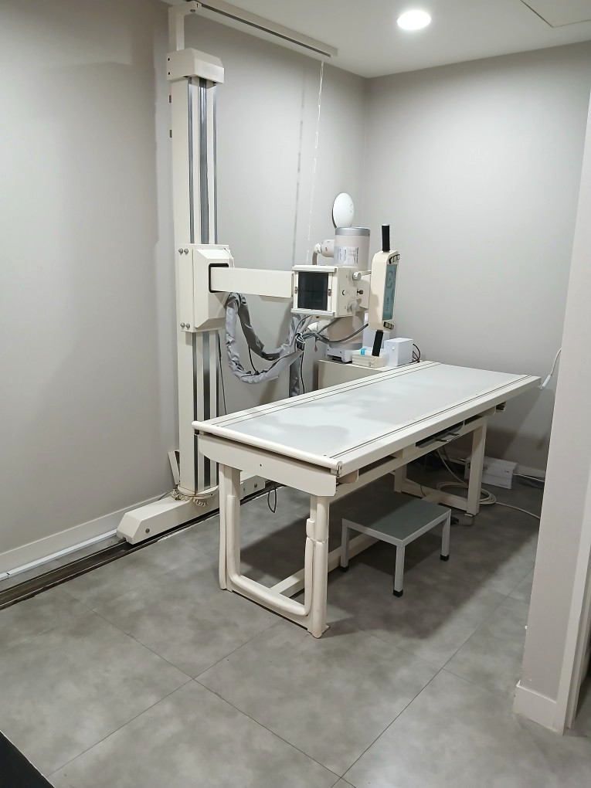
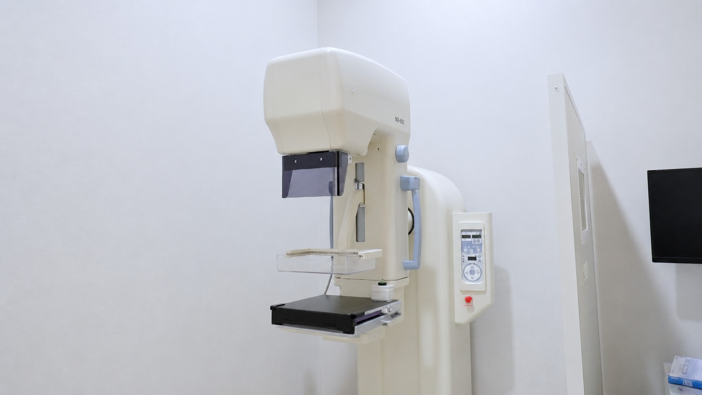
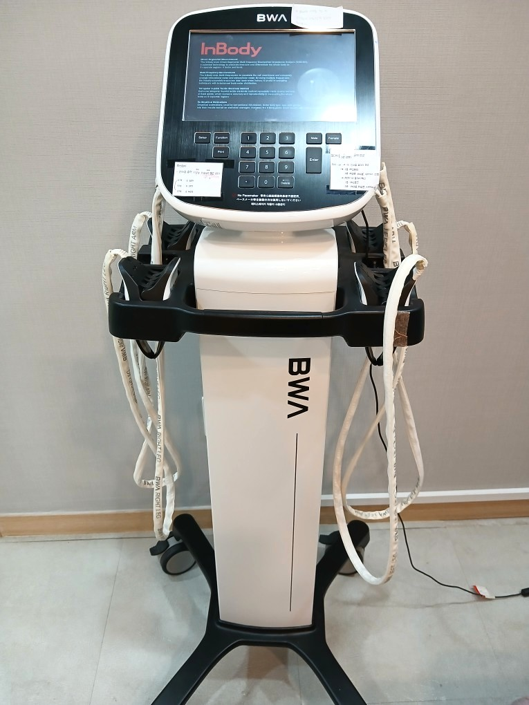
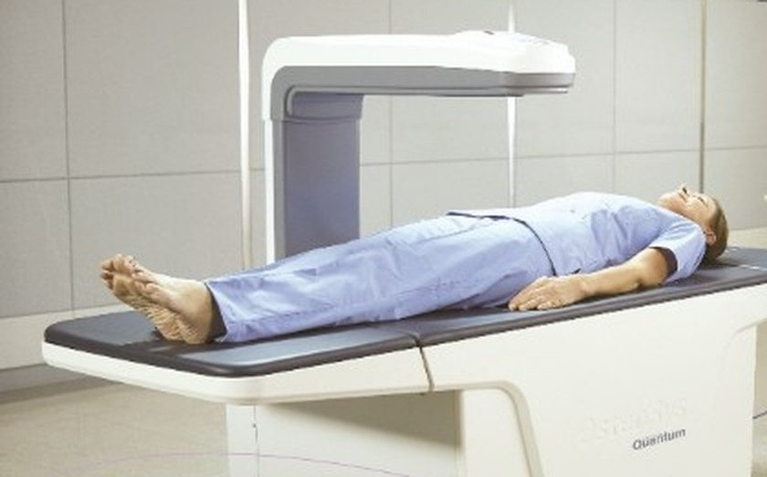

의료장비 안내
정을식내과의원이 진료와 검사에 쓰는 의료장비입니다. 장비를 누르면 자세한 설명을 볼 수 있습니다

5008S
Fresenius Medical Care의 5008 시리즈 혈액투석기. 수분 제거(한외여과, UF)량을 설정해 치료하며, 혈액투석(HD)과 온라인 혈액여과투석(HDF)을 지원합니다.
어떤 장비인가요
- 만성콩팥병 환자의 혈액투석에 쓰는 투석기입니다.
- 투석액 조성, 혈류량, 수분 제거(한외여과)량을 환자에 맞게 설정해 치료합니다.
특징
- 장비가 혈액투석(HD)과 온라인 혈액여과투석(HDF)을 지원합니다.
- 치료 중 압력·온도 등 주요 수치를 계속 감시하고, 이상이 생기면 경보로 알립니다.
이런 분께
- 정기적으로 혈액투석을 받으시는 분

6008S
FMC 5008 시리즈의 후속 기종인 혈액투석기. 온라인 혈액여과투석(HDF)을 지원합니다.
어떤 장비인가요
- Fresenius Medical Care 5008 시리즈의 후속 기종인 혈액투석기입니다.
- 투석액 조성, 혈류량, 수분 제거(한외여과)량을 환자에 맞게 설정해 치료합니다.
특징
- 장비가 혈액투석(HD)과 온라인 혈액여과투석(HDF)을 지원합니다.
- 치료 중 주요 수치를 계속 감시하고, 이상이 생기면 경보로 알립니다.
이런 분께
- 정기적으로 혈액투석을 받으시는 분
NCU-18
일본 니프로(Nipro)사의 혈액투석기입니다.
어떤 장비인가요
- 일본 니프로(Nipro)사의 혈액투석기입니다.
- 투석액, 혈류량, 수분 제거량을 설정해 혈액투석 치료를 합니다.
특징
- 치료 중 주요 수치를 감시하고, 이상이 생기면 경보로 알립니다.
이런 분께
- 정기적으로 혈액투석을 받으시는 분

ELUXEO 6000
후지필름 내시경 시스템. LCI·BLI 특수광 관찰 모드로 점막 표면의 혈관과 색 차이를 강조해 볼 수 있습니다.
어떤 장비인가요
- 위·대장내시경 영상을 만들고 보여 주는 후지필름 내시경 시스템(영상 처리 장치와 광원)입니다.
- 아래의 720 스코프를 연결해 검사합니다.
특징
- BLI(Blue Light Imaging)와 LCI(Linked Color Imaging) 같은 특수광 관찰 모드가 있습니다.
- 특수광 모드는 점막 표면의 혈관과 색 차이를 강조해 보여 주어, 일반 영상과 함께 관찰하는 데 씁니다.
검사 안내
- 수면(진정) 내시경을 선택할 수 있습니다.
- 검사 전 금식과 장 준비 방법은 예약할 때 안내해 드립니다.

720 Scope
ELUXEO 시스템에 연결해 쓰는 후지필름 700 시리즈 위·대장내시경 스코프입니다.
어떤 장비인가요
- ELUXEO 시스템에 연결해 쓰는 후지필름 700 시리즈 내시경 스코프입니다.
- 위내시경용과 대장내시경용 스코프로 검사합니다.
검사 안내
- 검사 후 스코프는 정해진 절차에 따라 세척·소독합니다.
- 검사 전 준비 사항은 예약할 때 안내해 드립니다.

R20 NEW
2025년 출시된 신형 초음파 장비를 새로 도입했습니다. 고해상도 이미징과 AI 기반 진단 보조 기능으로 복부·갑상선·경동맥·근골격 등 정밀 초음파 검사를 제공합니다.
어떤 장비인가요
- 2025년 출시된 삼성메디슨 초음파 장비로, 2026년에 새로 도입했습니다.
특징
- 고해상도 영상과 OLED 모니터를 갖추고 있습니다.
- 장비에 AI 기반 진단 보조 기능이 탑재되어 있습니다.
검사 부위
- 복부, 갑상선, 경동맥, 근골격 초음파
검사 안내
- 복부 초음파는 검사 전 금식이 필요합니다. 자세한 준비는 예약할 때 안내해 드립니다.

HS70A
삼성메디슨 초음파 장비. 복부, 심장, 경동맥, 갑상선 등 다양한 부위의 정밀 초음파 검사가 가능합니다.
어떤 장비인가요
- 삼성메디슨 초음파 장비입니다.
검사 부위
- 복부, 심장, 경동맥, 갑상선 등
검사 안내
- 초음파는 방사선을 쓰지 않는 검사입니다.
- 복부 초음파는 검사 전 금식이 필요합니다.

DR System
디지털 방사선 촬영 시스템. 촬영 직후 영상을 확인할 수 있으며, 흉부·척추·팔다리 등을 촬영합니다.
어떤 장비인가요
- 필름 대신 디지털 센서로 촬영하는 디지털 방사선(X-ray) 촬영 장비입니다.
- 촬영 직후 화면에서 바로 영상을 확인할 수 있습니다.
촬영 부위
- 흉부, 척추, 팔다리 등
검사 안내
- 임신 중이거나 임신 가능성이 있으면 촬영 전에 꼭 알려 주세요.

MX-600
디지털 유방촬영기(맘모그래피). 국가 유방암 검진 등 유방 X-ray 촬영에 씁니다.
어떤 장비인가요
- 유방을 X-ray로 촬영하는 디지털 유방촬영기(맘모그래피)입니다.
이런 분께
- 국가 유방암 검진 대상(만 40세 이상 여성, 2년마다)
- 유방에 만져지는 혹이나 이상 증상이 있는 분
검사 안내
- 촬영할 때 유방을 판으로 눌러 고정하므로 잠시 압박감이 있을 수 있습니다.
- 임신 중이거나 임신 가능성이 있으면 미리 알려 주세요.

BWA
체수분·체성분 분석기. 투석 환자의 체수분 상태를 살피는 참고 자료로 씁니다.
어떤 장비인가요
- 몸에 약한 전류를 흘려 저항을 재는 생체전기저항분석(BIA) 방식의 체성분 분석기입니다.
측정 항목
- 체수분(세포내·세포외 수분), 근육량, 체지방 등
활용
- 투석 환자의 체수분 상태와 부종을 살피는 데 참고 자료로 씁니다.
- 측정 결과는 진료 시 다른 검사와 함께 판단합니다.

제조사 제공 이미지DEXXUM T Quantum
DXA(이중에너지 X선 흡수법) 방식 골밀도 측정기로, 4채널 팬빔(Fan beam) 방식을 사용합니다. 척추·대퇴골 골밀도를 측정해 골다공증·골감소증을 검사합니다.
어떤 장비인가요
- 오스테오시스(OsteoSys)의 DXA(이중에너지 X선 흡수법) 골밀도 측정기입니다.
- 4채널 팬빔(Fan beam) 방식을 사용합니다.
측정 부위
- 척추(요추)와 대퇴골
결과 보는 법
- T-점수 −1.0 이상은 정상, −1.0~−2.5는 골감소증, −2.5 이하는 골다공증으로 분류합니다.
- 최종 판단은 나이와 병력을 함께 보고 진료 시 설명해 드립니다.
검사 안내
- 검사대에 누운 상태로 측정합니다.
- 벨트 버클이나 단추처럼 측정 부위에 금속이 있으면 빼고 검사합니다.
CartBP
일상 활동 중 24시간 동안 혈압을 자동 측정합니다. 진료실에서 잰 혈압과 별도로, 생활 속 혈압 변화를 확인합니다. 고혈압 진단 및 약물 효과 평가에 활용됩니다.
어떤 장비인가요
- 팔에 혈압 측정 띠를 차고 일상생활을 하면, 정해진 간격으로 혈압을 자동 측정하는 24시간 활동혈압계입니다.
활용
- 낮과 밤의 혈압 변화를 확인합니다.
- 진료실에서만 혈압이 높게 나오는 경우(백의고혈압)와 반대의 경우를 구분하는 데 도움이 됩니다.
- 혈압약의 효과를 평가하는 데 씁니다.
검사 안내
- 측정하는 동안 평소처럼 생활하시고, 측정 중에는 팔을 움직이지 않고 잠시 멈춰 주세요.
연속혈당측정
피부에 부착하는 센서로 24시간 혈당 변화를 연속 모니터링합니다. 식후 혈당 스파이크, 야간 저혈당까지 파악하여 당뇨 관리의 정밀도를 높입니다.
어떤 장비인가요
- 팔 등 피부에 작은 센서를 붙여 혈당 변화를 계속 기록하는 연속혈당측정기입니다.
활용
- 식사 후 혈당이 얼마나 오르는지, 밤사이 저혈당이 있는지 확인합니다.
- 식사와 생활 습관, 약 조절에 참고합니다.
검사 안내
- 센서를 붙인 채로 평소처럼 생활하시면 됩니다. 부착 기간과 주의 사항은 검사 시 안내해 드립니다.
모비케어 (Holter)
일상생활 중 24시간 동안 심전도를 연속 기록합니다. 가끔 나타나는 부정맥처럼 병원에서 잠깐 찍는 심전도로는 확인하기 어려운 리듬 이상을 찾는 데 씁니다.
어떤 장비인가요
- 가슴에 붙이는 패치형 심전도 기록기로, 일상생활 중 심전도를 연속으로 기록합니다.
활용
- 두근거림, 어지러움처럼 가끔 나타나는 증상이 심장 리듬 이상 때문인지 확인합니다.
- 병원에서 잠깐 찍는 심전도로는 잡히지 않는 부정맥을 찾는 데 씁니다.
검사 안내
- 패치를 붙인 채로 평소처럼 생활하시고, 증상이 있었던 시각을 메모해 오시면 판독에 도움이 됩니다.